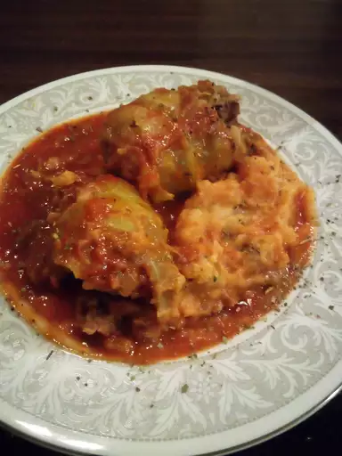

Stuffed Cabbage Rolls Recipe

Description
In this stuffed cabbage roll recipe, cabbage leaves are filled with a flavorful beef mixture and topped with an easy homemade sauce.
Ingredients
- Rice
- Cabbage leaves
- Beef
- Onion
- Egg
- Canned soup
- Seasonings
Steps
- Cook the rice and boil the cabbage leaves.
- Make the filling.
- Fill and tightly roll the cabbage rolls.
- Place the rolls in a skillet and cover with soup.
- Cover and boil, stirring and basting often.
Back to the recipes